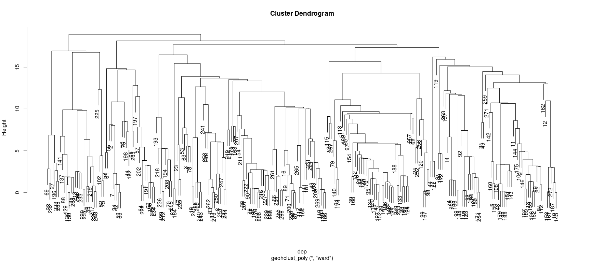
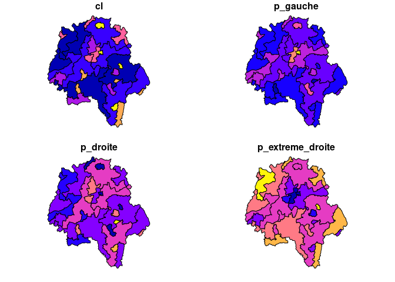

geohclust offers two functions ?geohclust_poly and ?geohclust_graph that enable the clustering of spatial data such as polygons with a hclust type approach but taking advantages of contiguity constraints. The contiguity naturally create a sparsely connected graph that can be leveraged to speed-up the calculations and deal with more than 30000 polygons in seconds.
Installation
You can install the development version of geohclust from GitHub with:
# install.packages("devtools")
devtools::install_github("comeetie/geohclust")Example
This is a basic example, we first prepare some spatial polygons data, here the results at the municipality level in one french department for the :
library(geohclust)
library(dplyr)
library(sf)
data("pres2022_t1_communes")
deplist = c(37)
dep = pres2022_t1_communes |>
filter(INSEE_DEP %in% deplist) |>
select(p_gauche,p_droite,p_extreme_droite) |>
filter(!is.na(p_gauche))Do the clustering and use the classical function from ?hclust (plot.hclust and ?cutree):
hc=geohclust_poly(dep)
plot(hc)
cutree(hc,k=30) |> head(20)
#> 1 2 3 4 5 6 7 8 9 10 11 12 13 14 15 16 17 18 19 20
#> 1 2 3 3 4 5 2 6 4 7 4 7 4 8 9 10 3 11 8 12
You may also use the ?geocutree function which build directly a spatial data.frame with the clustering results:
